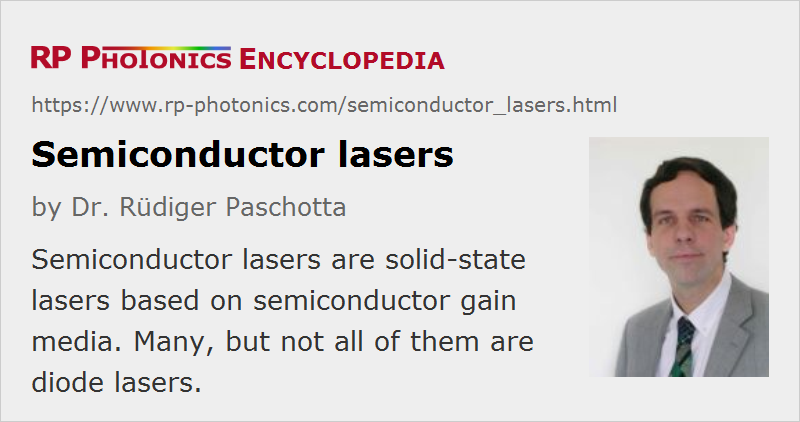

Semiconductor Lasers
Definition: lasers based on semiconductor gain media
More general term: solid-state lasers
More specific terms: laser diodes, optically pumped surface-emitting external-cavity semiconductor lasers, quantum cascade lasers
German: Halbleiterlaser
Categories: optoelectronics, lasers
How to cite the article; suggest additional literature
Author: Dr. Rüdiger Paschotta
Semiconductor lasers are solid-state lasers based on semiconductor gain media, where optical gain is usually achieved by stimulated emission at an interband transition under conditions of a high carrier density in the conduction band.
The physical origin of gain in a semiconductor (for the usual case of an interband transition) is illustrated in Figure 1. Without pumping, most of the electrons are in the valence band. A pump beam with a photon energy slightly above the band gap energy can excite electrons into a higher state in the conduction band, from where they quickly decay to states near the bottom of the conduction band. At the same time, the holes generated in the valence band move to the top of the valence band. Electrons in the conduction band can then recombine with these holes, emitting photons with an energy near the bandgap energy. This process can also be stimulated by incoming photons with suitable energy. A quantitative description can be based on the Fermi–Dirac distributions for electrons in both bands.
Most semiconductor lasers are laser diodes, which are pumped with an electrical current in a region where an n-doped and a p-doped semiconductor material meet. However, there are also optically pumped semiconductor lasers, where carriers are generated by absorbed pump light, and quantum cascade lasers, where intraband transitions are utilized.
Common materials for semiconductor lasers (and for other optoelectronic devices) are
- GaAs (gallium arsenide)
- AlGaAs (aluminum gallium arsenide)
- GaP (gallium phosphide)
- InGaP (indium gallium phosphide)
- GaN (gallium nitride)
- InGaAs (indium gallium arsenide)
- GaInNAs (indium gallium arsenide nitride)
- InP (indium phosphide)
- GaInP (gallium indium phosphide)
These are all direct bandgap semiconductors; indirect bandgap semiconductors such as silicon do not exhibit strong and efficient light emission. As the photon energy of a laser diode is close to the bandgap energy, compositions with different bandgap energies allow for different emission wavelengths. For the ternary and quaternary semiconductor compounds, the bandgap energy can be continuously varied in some substantial range. In AlGaAs = AlxGa1−xAs, for example, an increased aluminum content (increased x) causes an increase in the bandgap energy.
While the most common semiconductor lasers are operating in the near-infrared spectral region, some others generate red light (e.g. in GaInP-based laser pointers) or blue or violet light (with gallium nitrides). For mid-infrared emission, there are e.g. lead selenide (PbSe) lasers (lead salt lasers) and quantum cascade lasers.
Apart from the above-mentioned inorganic semiconductors, organic semiconductor compounds might also be used for semiconductor lasers. The corresponding technology is by far not mature, but its development is pursued because of the attractive prospect of finding a way for cheap mass production of such lasers. So far, only optically pumped organic semiconductor lasers have been demonstrated, whereas for various reasons it is difficult to achieve a high efficiency with electrical pumping.
Types of Semiconductor Lasers
There is a great variety of different semiconductor lasers, spanning wide parameter regions and many different application areas:
- Small edge-emitting laser diodes generate a few milliwatts (or up to 0.5 W) of output power in a beam with high beam quality. They are used e.g. in laser pointers, in CD players, and for optical fiber communications.
- External cavity diode lasers contain a laser diode as the gain medium of a longer laser cavity. They are often wavelength-tunable and exhibit a small emission linewidth.
- Both monolithic and external-cavity low-power levels can also be mode-locked for ultrashort pulse generation.
- Broad area laser diodes generate up to a few watts of output power, but with significantly poorer beam quality.
- High-power diode bars contain an array of broad-area emitters, generating tens of watts with poor beam quality.
- High-power stacked diode bars contain stacks of diode bars for the generation of extremely high powers of hundreds or thousands of watts.
- Surface-emitting lasers (VCSELs) emit the laser radiation in a direction perpendicular to the wafer, delivering a few milliwatts with high beam quality.
- Optically pumped surface-emitting external-cavity semiconductor lasers (VECSELs) are capable of generating multi-watt output powers with excellent beam quality, even in mode-locked operation.
- Quantum cascade lasers operate on intraband transitions (rather than interband transitions) and usually emit in the mid-infrared region, sometimes in the terahertz region. They are used e.g. for trace gas analysis.
Typical Characteristics and Applications
Some typical aspects of semiconductor lasers are:
- Electrical pumping with moderate voltages and high efficiency is possible particularly for high-power diode lasers, and allows their use e.g. as pump sources for highly efficient solid-state lasers (→ diode-pumped lasers).
- A wide range of wavelengths are accessible with different devices, covering much of the visible, near-infrared and mid-infrared spectral region. Some devices also allow for wavelength tuning.
- Small laser diodes allow fast switching and modulation of the optical power, allowing their use e.g. in transmitters of fiber-optic links.
Such characteristics have made semiconductor lasers the technologically most important type of lasers. Their applications are extremely widespread, including areas as diverse as optical data transmission, optical data storage, metrology, laser spectroscopy, laser material processing, pumping solid-state lasers (→ diode-pumped lasers), and various kinds of medical treatments.
Pulsed Output
Most semiconductor lasers generate a continuous output. Due to their very limited energy storage capability (low upper-state lifetime), they are not very suitable for pulse generation with Q switching, but quasi-continuous-wave operation often allows for significantly enhanced powers. Also, semiconductor lasers can be used for the generation of ultrashort pulses with mode locking or gain switching. The average output powers in short pulses are usually limited to at most a few milliwatts, except for optically pumped surface-emitting external-cavity semiconductor lasers (VECSELs), which can generate multi-watt average output powers in picosecond pulses with multi-gigahertz repetition rates.
Modulation and Stabilization
A particular advantage of the short upper-state lifetime is the capability of semiconductor lasers to be modulated with very high frequencies, which can be tens of gigahertz for VCSELs. This is exploited mainly in optical data transmission, but also in spectroscopy, for the stabilization of lasers to reference cavities, etc.
Suppliers
The RP Photonics Buyer's Guide contains 104 suppliers for semiconductor lasers. Among them:
Questions and Comments from Users
Here you can submit questions and comments. As far as they get accepted by the author, they will appear above this paragraph together with the author’s answer. The author will decide on acceptance based on certain criteria. Essentially, the issue must be of sufficiently broad interest.
Please do not enter personal data here; we would otherwise delete it soon. (See also our privacy declaration.) If you wish to receive personal feedback or consultancy from the author, please contact him e.g. via e-mail.
By submitting the information, you give your consent to the potential publication of your inputs on our website according to our rules. (If you later retract your consent, we will delete those inputs.) As your inputs are first reviewed by the author, they may be published with some delay.
Bibliography
| [1] | J. V. Moloney et al., “Quantum design of semiconductor active materials: laser and amplifier applications”, Laser & Photon. Rev. 1 (1), 24 (2007), doi:10.1002/lpor.200610003 |
| [2] | W. W. Chow and S. W. Koch, Semiconductor-Laser Fundamentals, Springer, Berlin (1999) |
| [3] | B. E. A. Saleh and M. C. Teich, Fundamentals of Photonics, John Wiley & Sons, Inc., New York (1991) |
See also: lasers, laser diodes, external-cavity diode lasers, broad area laser diodes, diode bars, diode stacks, edge-emitting semiconductor lasers, surface-emitting semiconductor lasers, quantum cascade lasers, mode-locked diode lasers, semiconductor optical amplifiers
and other articles in the categories optoelectronics, lasers
|  |
If you like this page, please share the link with your friends and colleagues, e.g. via social media:
These sharing buttons are implemented in a privacy-friendly way!